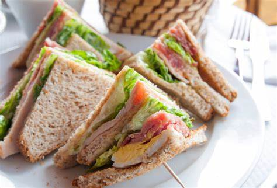
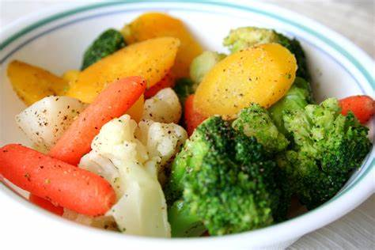
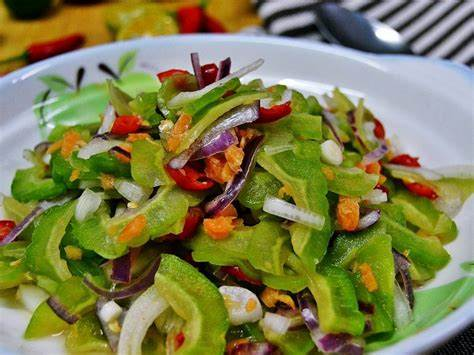

Makanan yang sihat
Menu makanan sehat mudah di dapatkan bahkan mudah dibuat sendiri di rumah. Anda tentu sering mendengar ada berbagai menu makanan sehat sehari-hari atau pedoman kesehatan yang menganjurkan penerapan makan sehat yang ditunjukkan dengan simbol berupa gambar piramida atau piring makan sehat.
Antara ciri-ciri makanan sihat:
Antara contoh makanan sihat:


